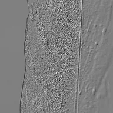

Reliëf

Past een reliëfeffect toe met luminantieverlopen langs een opgegeven lichthoek.
Instellingen
| Instelling | Type | Bereik | Standaard |
|---|---|---|---|
| Lichthoek | Getal | 0 tot 360 | 45 |
| Sterkte | Getal | 0 tot 4 | 1 |

Past een reliëfeffect toe met luminantieverlopen langs een opgegeven lichthoek.
| Instelling | Type | Bereik | Standaard |
|---|---|---|---|
| Lichthoek | Getal | 0 tot 360 | 45 |
| Sterkte | Getal | 0 tot 4 | 1 |